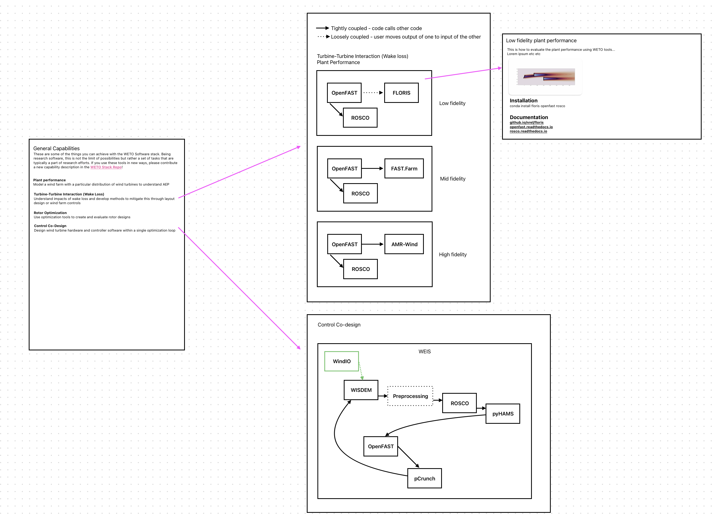

Capabilities#
This page outlines typical workflows and capabilities involved in wind energy system design and analysis using the WETO Software Suite.
Plant Performance
Plant performance analysis involves the simulation of power production for the collection of wind turbines in a wind farm given the atmospheric conditions over a period of time. The result is typically represented as Annual Energy Production (AEP) in Megawatthours (MWh), Gigawatthours (GWh), or Terrawatthours (TWh).
Wake loss modeling is the study of turbine-turbine interactions via wind turbine wakes. Typically, the interaction mechanism is energy loss due to a shadow in the wind speed behind a wind turbine, but other mechanisms such as influence on turbulence are also considered. Wind farm controls is often studied in conjunction with wake loss modeling as a mechanism for reducing wake losses.
Rotor Optimization
Rotor optimization focuses on the iterative design of the rotor components such as blades and control systems. This process typically involves modeling the aerodynamic loads and subsequent elastic response of the blade. This aero-elastic model is used within an optimization algorithm to arrive at rotor designs that meet a set of requirements.
Control Co-Design
Control co-design is a method for advanced system designs that incorporate control systems into the structural and aerodynamic designs. The hardware and software systems are designed in a coupled sense rather than individually. The result is a blade that may only be operable or optimal with a specific controller, but the performance can be much greater than a decoupled design.
System design involves the high-level preliminary design of the power generation systems and their connection to the grid. Additionally, cost models are incorporated here to identify an initial estimate of the cost of energy.
The detailed design of wind turbine components and wind farms is detailed here. This process typically involves modeling system components at varying levels of fidelity while moving through the design space.
Wireframe prototype#
The capabilities dashboard will contain a list of high level capabilities made up of components of the WETO software stack. It will describe each capability as they relate to the software used to complete it. This should not be a tutorial on doing each of these things, but it should give an idea of the tools that are required to do it. It will give an intuition on which models are related, interconnected, and perform certain tasks.

Defining Capabilities#
The objective is to define the analyses, design processes, and other investigations that are possible with the existing software tools supported by WETO.
Start by defining a specific task (analysis, design, validation, etc).
Describe the context:
Why does anyone need to do this?
What does it mean in the big picture of wind energy?
Create a map of steps taken to accomplish the task. This should be written in words to describe the tasks, and a flow chart may be useful to connect the task descriptions in sequence if multiple steps may occur concurrently.
Attach a software tool to each task.
The result should be a map of the software required to accomplish a high level piece of work with WETO software. To visualize the map, it is helpful to first draw the connections on paper. Once the graph is accurate, add the nodes and their connectivity to a text-based digital representation of the graph using mermaid which allows to track changes to the graph and automatically render it on the website.